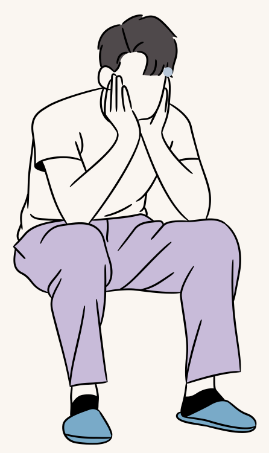
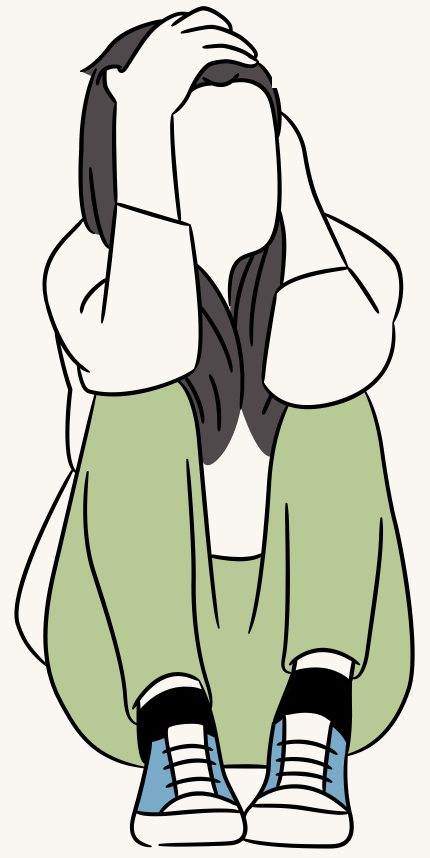
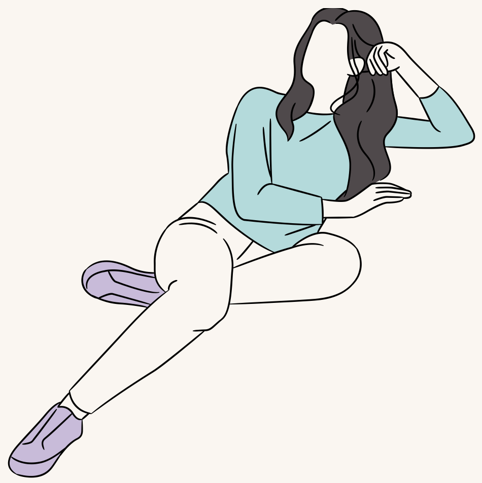
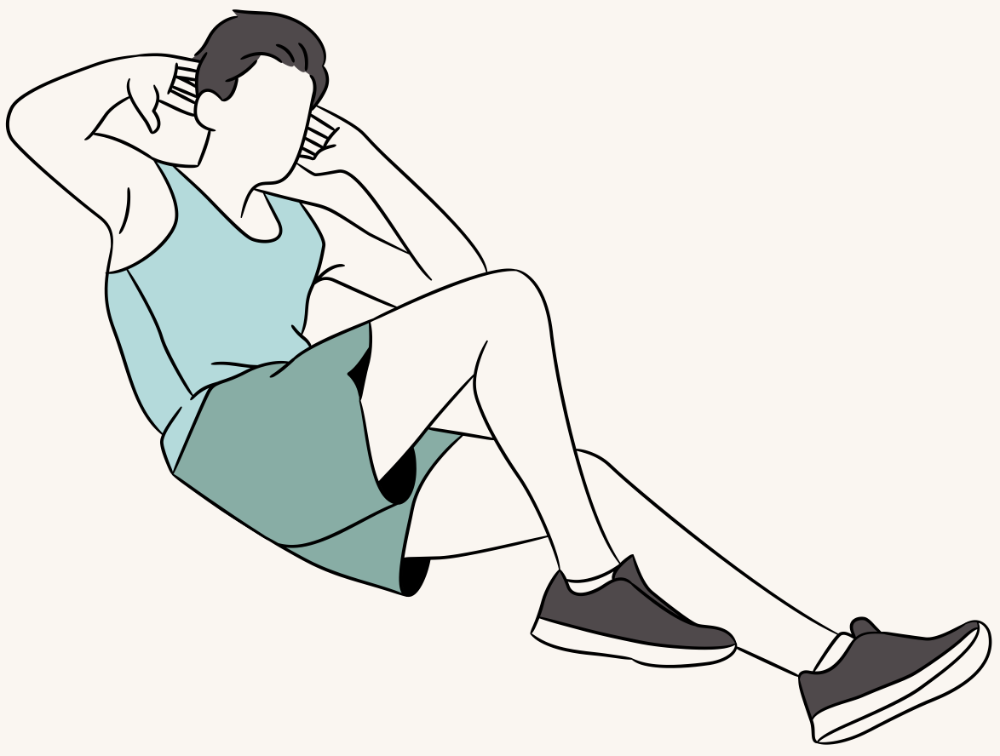

For everyday moments when your mental health needs understanding and support
Content as submitted to the Neolth Innovation Challenge in 2024, where it received an All Star Award. Spelling and grammar corrected in 2026.
A collection of multimedia tools that offer a variety of activities a person can use to support their mental health in times of stress and uncomfortable emotions.
These tools combine Neolth content (practices, expert advice, student stories) with resources that provide music, meditation and imagery (social media, informational posts, quotes).
It is no secret that many people are struggling with declining mental health, and it is rarely obvious to the people around them. Many do not receive mental health treatment or services.
Some of the scariest moments a person can experience come when their mental health keeps them from working, from keeping up with everyday needs and hygiene, and from feeling a sense of control in their life.
A person should not feel helpless.
Prevention can start with yourself, and the mental health toolkit gives a person a place to find tools and activities that help them take steps to improve their wellbeing.
Going through a breakup
Battling depression
Experiencing burnout
Diagnosed with a chronic mental health condition
Recently went through a breakup with his boyfriend.

This life event is keeping him from showing up at work and finishing his coursework.
He can read stories from other people who have gone through breakups and what they learned.
He can read a blog post on how to approach a day while navigating uncomfortable emotions.
He can listen to talks on Neolth, like interviews about navigating hard emotions.
He can listen to music that has helped other students through a breakup or a stressful life event.
He can watch Neolth videos about self-confidence, emotions and managing depression.
He can also find linked TED Talks, music videos and other videos with ideas for what to try while navigating a breakup.
In the middle of her senior year of college, battling recurring depression.

Marcie can use journal prompts to reflect on what is happening in the moment and what she wants to do with her day.
One example of a journal prompt:
Reflect on a time when you faced a setback. How did you bounce back from it?
She can find a Neolth video about school and the struggles college students face, like depression.
Not sure if she is experiencing burnout. She is struggling with sleep, productivity and self-image.

Sophie can listen to podcasts recommended by Neolth ambassadors with ideas for managing productivity, self-image and sleep.
She can also use audio meditation to get back to her baseline at work or when her day feels out of balance.
Sophie loves informative and artistic social media posts that make her feel less alone in her experiences and emotions.
She can review facts and information about burnout, shown through data and text, to learn what other people experience and steps she can take to feel better.
Has a chronic mental health diagnosis, takes medication and goes to therapy.
Still, he struggles at work and in his personal relationships.

Will likes to meditate, and he looks forward to meditations that other young adults share in the toolkit.
Will prefers to read and write, so Neolth's journal prompts encourage him to practice self-care and remind him of his direction.
He can read a story or infographic about managing his condition in different environments.
Having this information reminds him that he has control over his life.